《小宇和安全小分队》
20页中文儿童绘本打印版。浏览器中选择“打印”即可保存为PDF。

封面
《小宇和安全小分队》
说“停”——走安全线——报告大人——陪伙伴！
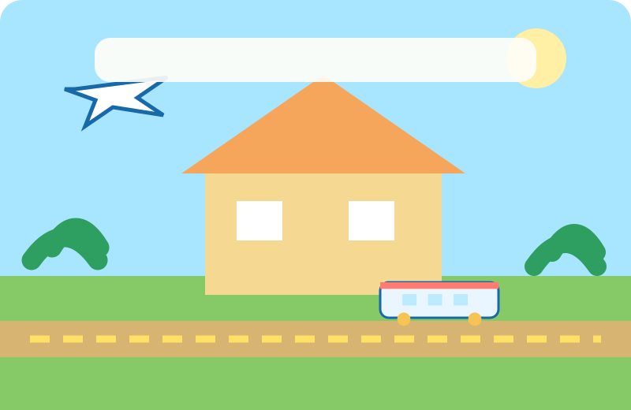
第2页
像一座小小交通城
阳光小学开学啦！
小宇觉得，校园像一座小小的交通城：教室是车站，操场是广场，彩色小路就是安全的铁轨。
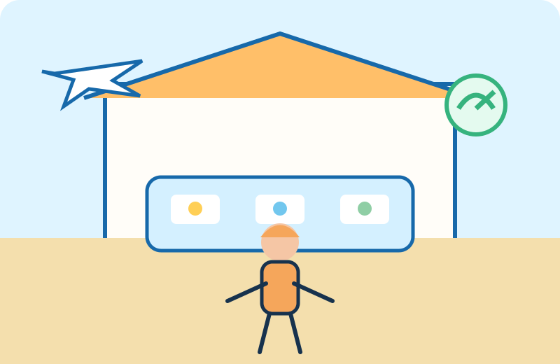
第3页
安全小分队成立
小宇最喜欢飞机和高铁。
他搭了一个小小的指挥中心，宣布：“今天起，我们就是校园安全小分队！”
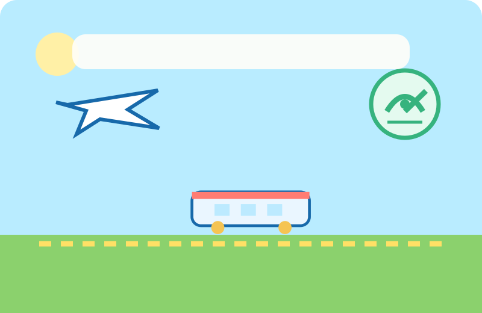
第4页
三个交通伙伴
小飞机负责观察，小高铁负责带大家去安全站，预警雷达负责提醒大家找大人。
雷达上的盾牌图标只预警，不攻击。
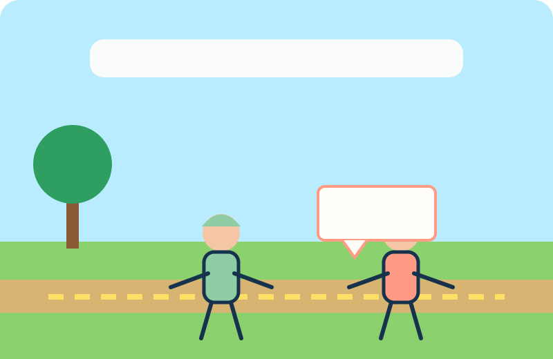
第5页
一次小意外
豆豆正在画一列长长的高铁。
大壮转身时，不小心碰掉了他的画本。
“哎呀，对不起！我不是故意的。”大壮说。
第6页
道歉和改正
“没关系，我们一起捡起来吧。”豆豆说。
小飞机亮起了绿色的小灯：“这是一次意外。愿意道歉，也愿意改正，事情就能解决。”
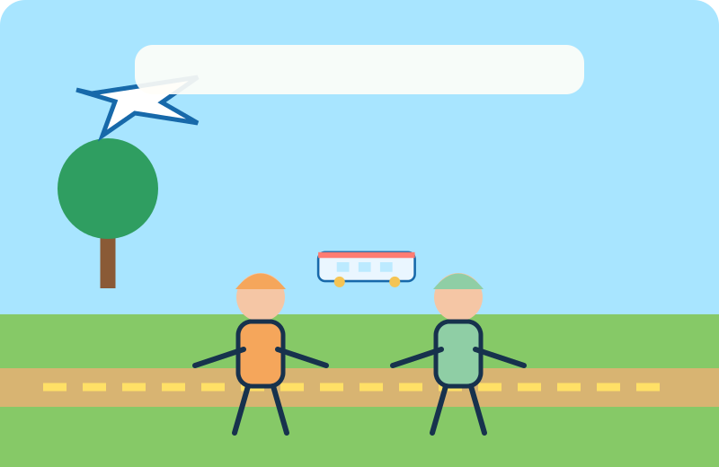
第7页
高铁游戏开始
下课了，豆豆把高铁模型放到彩色线路上。
小宇说：“我们来玩高铁游戏吧！”大家都想让高铁安全到站。
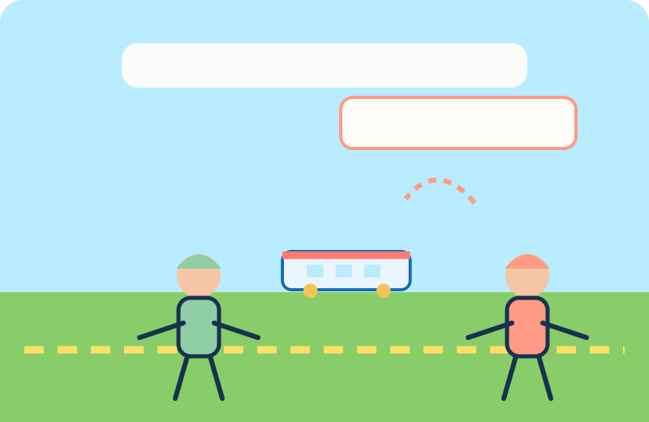
第8页
高铁被拿走
大壮走过来，拿走了豆豆的高铁。
“这个高铁归我了！”
豆豆小声说：“请把高铁还给我，我还在玩。”
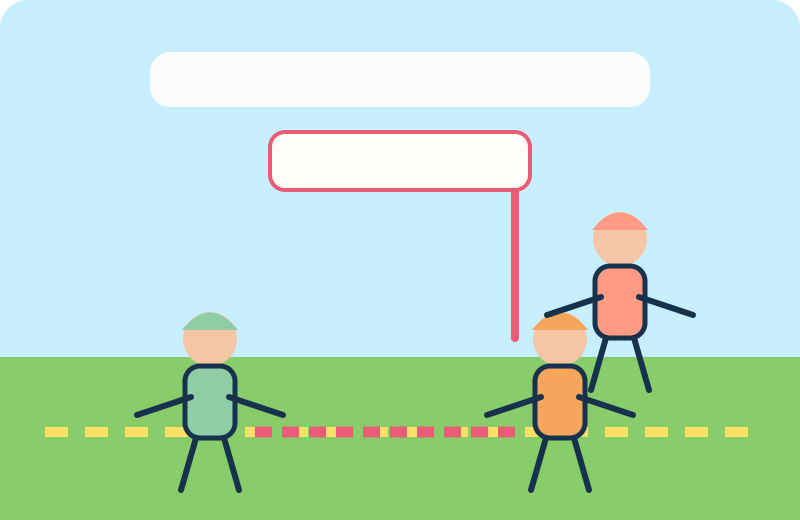
第9页
安全路线被挡住
“我就不还！你也不能参加我们的游戏！”大壮说。
他站在黄色安全线前，挡住了豆豆。
小宇没有冲过去抢东西。
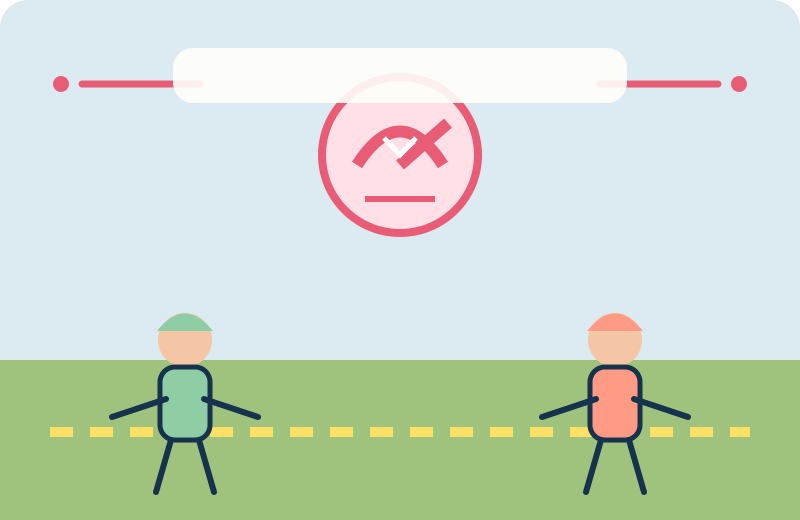
第10页
红色预警
过了一会儿，大壮又一次拿走了高铁。
豆豆说：“我不喜欢这样……我有点害怕。”
伤害反复发生了，豆豆一个人很难解决。
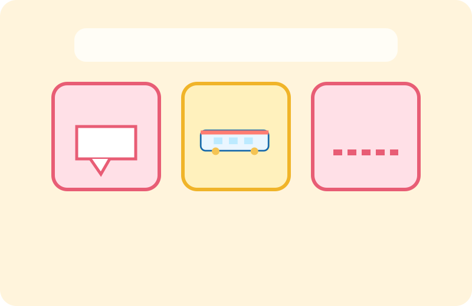
第11页
这不是普通玩笑
豆豆说了“不喜欢”；高铁又一次被拿走；安全线又一次被挡住。
“反复伤害别人，让别人害怕，这就不是普通的玩笑了。我们要找大人帮忙。”
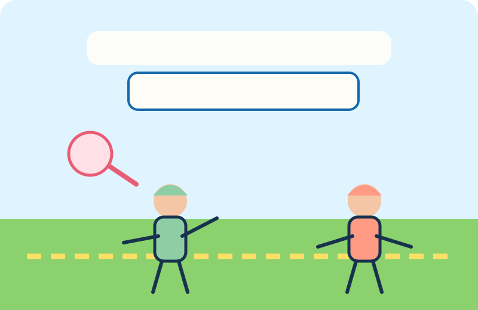
第12页
第一步，说“停”
豆豆深呼吸，站稳身体。
“我不喜欢你抢我的东西。请停止！”
表达感受，是保护自己的第一步。
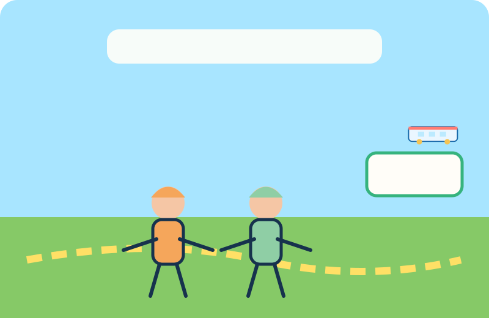
第13页
第二步，走安全线
小高铁亮起车灯：“第二步，走安全线！”
豆豆和小宇离开让人不舒服的地方，走向老师能看见的安全站。
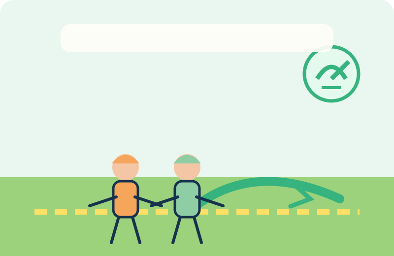
第14页
不安全时，直接离开
“如果现场不安全，可以不说‘请停止’，直接离开，马上找大人。”
“我们不推、不打，也不抢回东西。安全最重要！”
第15页
第三步，报告大人
说清楚谁做了什么，在哪里发生，发生了几次，还有你的感受。
“大壮连续两次抢我的高铁，还挡住我。我感到害怕。”
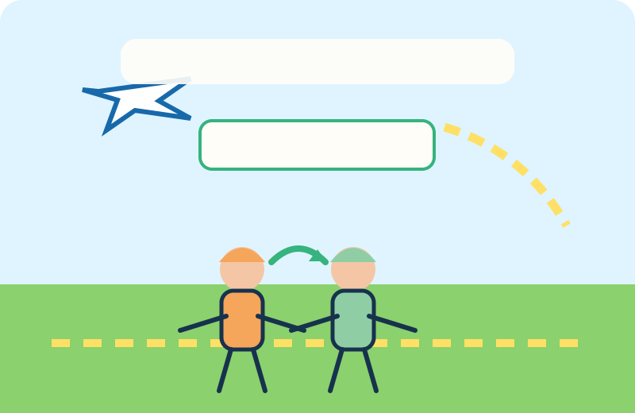
第16页
第四步，陪伙伴
看见同伴遇到伤害，不围观，不起哄，不跟着笑，也不要一个人去争斗。
陪他一起找老师，就是很勇敢的帮助。
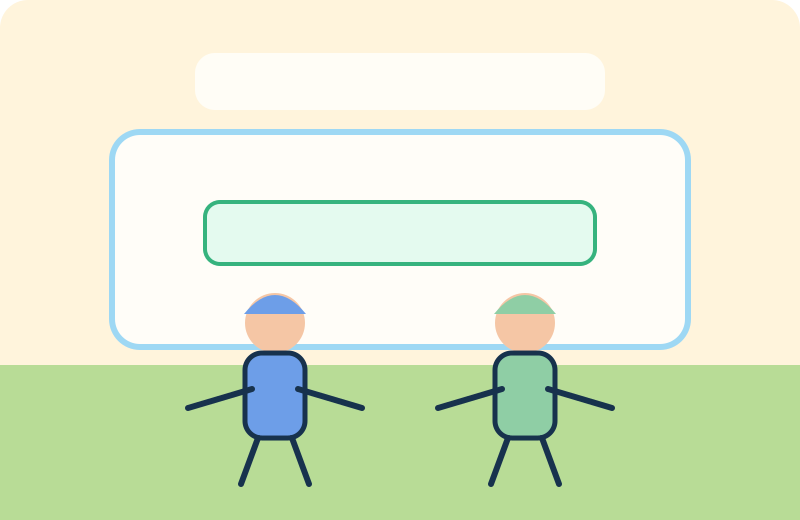
第17页
安全站里的老师
“谢谢你们告诉我。来求助不是告状，而是在保护自己和同伴。”
“豆豆，你没有做错什么。”
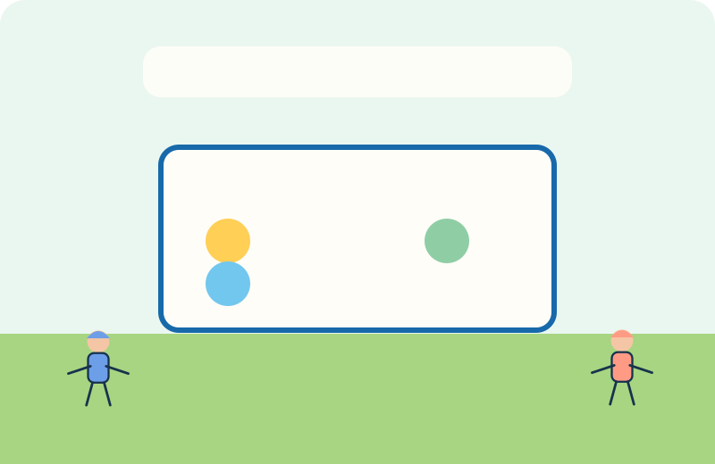
第18页
学会新的游戏规则
想参加游戏，可以先问：“我能一起玩吗？”不能抢东西，也不能把别人赶走。
大壮说：“对不起。我会先问，听到‘不喜欢’就停止。”
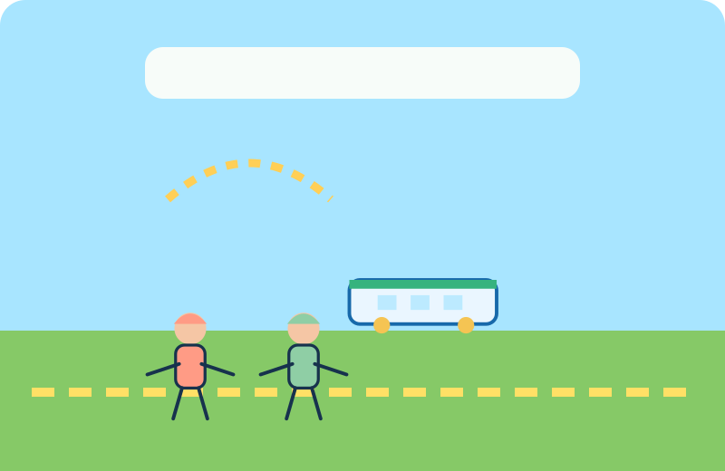
第19页
友善高铁出发
大壮排在队伍最后，耐心等待。
“我能一起玩吗？”
“可以！”豆豆笑着说。
“呜——安全到站！”
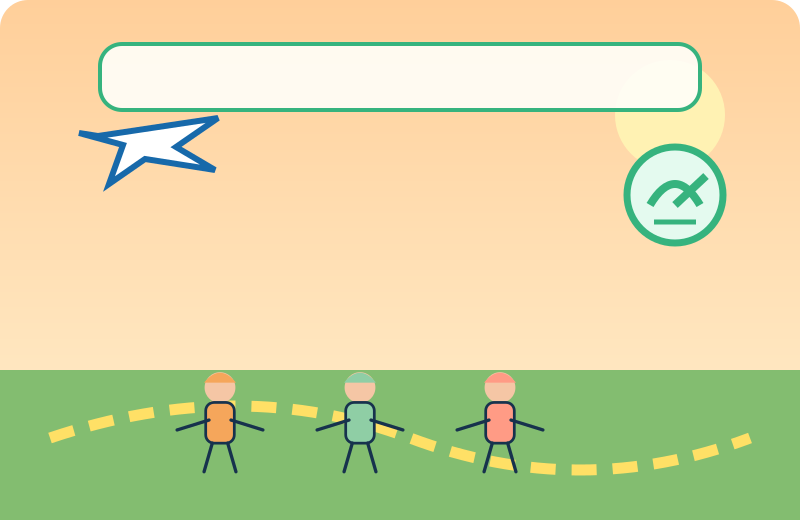
第20页
勇气宣言
遇到霸凌不是你的错。真正的勇敢，是保护自己，也用安全的方法帮助别人。
说“停”——走安全线——报告大人——陪伙伴！
看见友善，就一起加入；看见伤害，就及时求助。